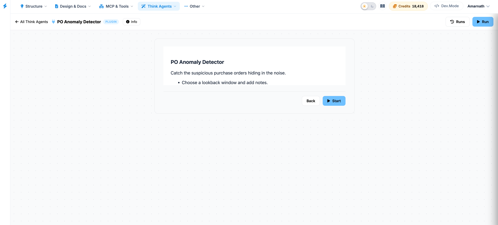

PO Anomaly Detector
The PO Anomaly Detector analyzes purchase order transactions to identify unusual procurement activities that may indicate errors, policy violations, or potential fraud. By auditing purchase orders across suppliers within a specified review period, it detects anomalies such as duplicate orders, abnormal price increases, and split purchases, helping procurement and finance teams improve purchasing oversight and reduce financial risk.

Key Features
- Configurable Review Period: Specify a lookback window (for example, the last 30, 60, or 90 days) to determine the range of purchase orders included in the analysis. Users may also provide operational notes or audit-specific instructions to guide the evaluation.
- Controlled Analysis Planning: Generates a structured execution plan outlining the review period, supplier grouping strategy, anomaly detection criteria, and SQL query. The plan is presented for user verification before processing begins.
- Automated Supplier-Based Auditing: Groups purchase orders by supplier and systematically analyzes each group to identify suspicious procurement patterns, including duplicate purchase orders, significant price spikes, and potential split orders designed to bypass approval thresholds.
- Severity-Ranked Anomaly Report: Produces a prioritized list of detected anomalies ranked by severity, enabling procurement and compliance teams to focus on the highest-risk transactions first. Each flagged purchase order includes the detected anomaly type and supporting details.
- Adaptable SQL Schema Layer: Reads directly from your project's purchase_orders table by default. The SQL query can be customized within the interface to support different database schemas or table naming conventions.
Process Workflow
1. Configure the Review Perio
Select the desired lookback window for the audit and enter any relevant notes or investigation criteria.
2. Review the Analysis Plan
Examine the generated execution plan, including the SQL query, supplier grouping logic, and anomaly detection rules, to verify that they align with your procurement data.
3. Execute the Purchase Order Audit
Confirm the plan to begin processing. The application groups purchase orders by supplier and evaluates each group for duplicate orders, price anomalies, and split purchasing patterns.
4. Review the Anomaly Report
Access the severity-ranked results highlighting detected purchase order anomalies. Use the findings to investigate suspicious transactions, strengthen procurement controls, and support compliance or financial audits.